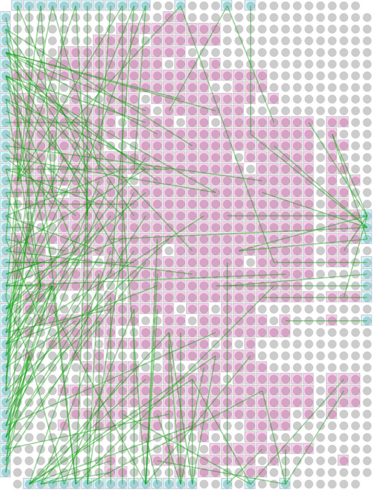
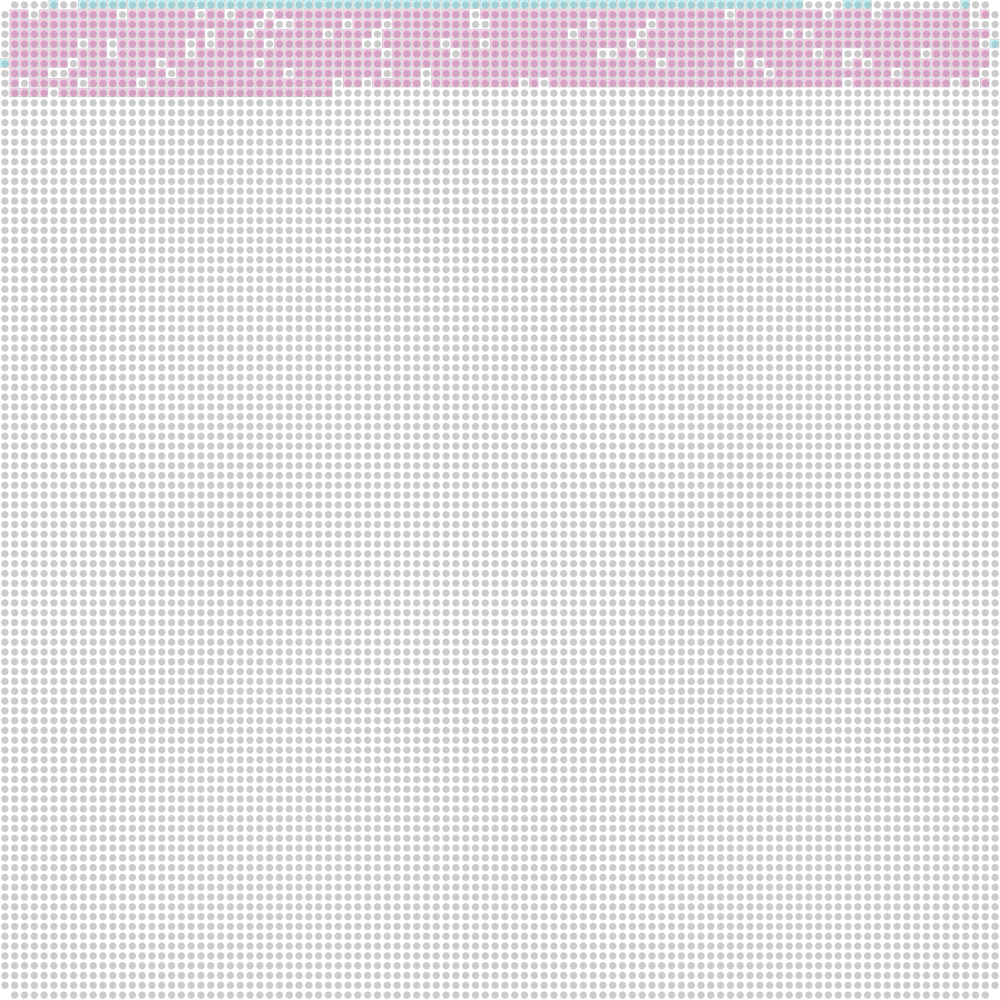
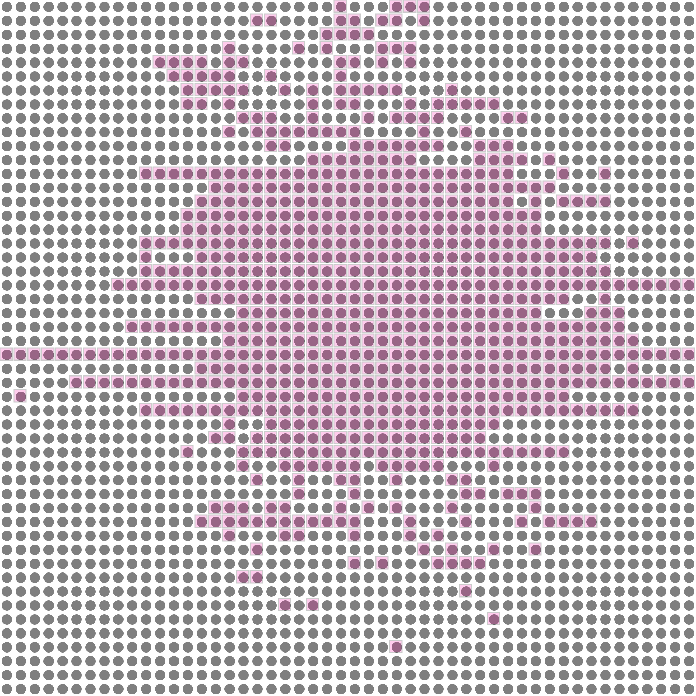

layout: true class: typo, typo-selection --- count: false class: nord-dark, middle, center # ⚡ nnsplace, Faster Still ## 🐍 Python & ⚙️ C++ — the sequel (Part 2) ### 🐍 1.55× · ⚙️ 1.66× · 0 results moved 🧊 @luk036 👨💻 · 2026 📅 --- ### 📋 Agenda .pull-left[ **Part 1 — Where We Left Off** 🧭 - The NNS pipeline, one more time 🔁 - The prior scoreboard: 16.0 s → 6.5 s 📉 - Two "dead ends" we chose to revisit 🔍 **Part 2 — Python: 1.55×** 🐍 - Profile: the two hot paths - Hoist the ratio out of `distance()` - Kill the transient `nx.Graph` ] .pull-right[ **Part 3 — C++: 1.6–1.8×** ⚙️ - `Domain = Fraction` → `Coord` - A leaner matching & legalizer - The 39-attempt trap 🕳️ **Part 4 — Verification & Lessons** ✅ - Bit-identical, 24/24 - xmake **and** cmake - Takeaways 🎯 ] --- class: nord-light, middle, center ## 🧭 Part 1 — Where We Left Off --- ### 🧩 The NNS Pipeline (recap) A "no-nonsense" placer: build a flow graph, snake-fill, then iterate two moves until the worst wire length stalls. 🔁 .mermaid[ <pre> graph LR NL["Netlist\np1.json"] --> FG["Flow graph\ncreate_flow_graph"] FG --> IP["Initial placement\nsnake fill + shuffle"] IP --> OPT["Per-axis optimize\nHoward + legalize"] OPT --> IO["I/O pad snap"] IO --> OUT["Placement\nSVG output"] OPT -->|"repeat until stall"| OPT style NL fill:#e3f2fd,stroke:#1565c0,stroke-width:3px style FG fill:#fff9c4,stroke:#f57f17,stroke-width:3px style IP fill:#c8e6c9,stroke:#2e7d32,stroke-width:3px style OPT fill:#f8bbd0,stroke:#c2185b,stroke-width:3px style IO fill:#d1c4e9,stroke:#6a1b9a,stroke-width:3px style OUT fill:#ffe0b2,stroke:#e65100,stroke-width:3px </pre> ] > We optimise **worst-case** wire length — the min-cycle-ratio of the flow graph. 📏 --- ### 🔥 Two Hot Paths, One Loop Every iteration spends its time in exactly two places. Everything else is noise. .mermaid[ <pre> graph TD OPT["optimize_axis(place, axis)"] --> H["apply_howard\nMinParametricSolver"] OPT --> L["legalize_modules\nHungarian assignment"] H --> D["distance(ratio, arc)\n533K calls / run"] L --> M["min_weight_full_matching\n211 calls / run"] style OPT fill:#e3f2fd,stroke:#1565c0,stroke-width:3px style H fill:#ffcdd2,stroke:#c62828,stroke-width:3px style L fill:#f8bbd0,stroke:#c2185b,stroke-width:3px style D fill:#fff9c4,stroke:#f57f17,stroke-width:3px style M fill:#fff9c4,stroke:#f57f17,stroke-width:3px </pre> ] | Path | Profile share | Why it's hot | |:-----|:-------------:|:-------------| | Howard cost model | ~37 % | one callback **per directed edge**, ~533 k / run | | Legalization | ~38 % | rebuilds a graph + Hungarian **per bucket** | --- ### 📉 The Prior Scoreboard Our previous deep-dive took `p1.json` @ 32×32 from **16.0 s → 6.5 s** with four surgical fixes. 🎉 | Suggestion | Before → After | |:-----------|:--------------:| | #1 kill `Fraction` arithmetic in `distance()` | 16.0 s → 7.6 s | | #2 build the solver adjacency once | 7.6 s → 7.0 s | | #3 gate the matching when it must fail | 7.0 s → 6.5 s | | #4 hoist weights, score in $O(\log \deg)$ | 6.5 s → 6.5 s | > Two conclusions were left on the table — and **both deserve a second look**. 🔍 --- ### 🔁 Two "Dead Ends" Worth Revisiting From the previous deck's *"what we deliberately did **not** do"* list: > ❌ **Swap the matching to scipy?** — networkx 3.6 already calls `scipy.optimize.linear_sum_assignment`; measured dispatcher overhead $\approx 0$. **Nothing to win.** > ❌ **Replace `Fraction` with `float`?** — bit-identical on all 30 scenarios, but that is *empirical luck*, not a guarantee. We kept exactness. **This session's thesis:** the *dispatcher* was free — but the **transient `nx.Graph`** was not. 🎯 --- class: nord-light, middle, center ## 🐍 Part 2 — Python: 1.55× Without Moving a Single Cell --- ### 📊 Baseline Profile (`p1.json` @ 32×32) 833 modules · 902 nets · 81 pads. One profiled `run()` = **6.43 s**. | Bucket | Time | Share | Hot functions | |:-------|-----:|:-----:|:--------------| | Howard / negative-cycle | ~2.4 s | **37 %** | `_HowardsCost.distance` (533 K), `get_weight` (533 K) | | Legalize / matching | ~2.45 s | **38 %** | `_add_radius_edges`, `nx.Graph.add_edge` (93 K), `minimum_weight_full_matching` | | Objective & cost setup | ~0.5 s | 8 % | `apply_howard` cost loop, `worst_wirelength` | | Everything else | ~1.0 s | 17 % | `TinyDiGraph.__getitem__`, dict iteration | > Rule #1: **profile first** — the two hot paths are the whole story. 🔍 --- ### 🐍 Suggestion #1 — The Cost Model, 533K Times The min-cycle-ratio distance is a single integer division. With ${\color{royalblue} r} = {\color{red}n}/{\color{red}d}$ and edge cost ${\color{#2e7d32} c}$: $$ \text{dist}(r, e) \;=\; \left\lfloor \frac{{\color{red}n} - {\color{#2e7d32} c}\,{\color{red}d}}{\delta \cdot {\color{red}d}} \right\rfloor $$ But the numerator/denominator were re-read from the `Fraction` on **every** call — 533 k times per run: ```python def distance(self, ratio, arc): n, d = ratio.numerator, ratio.denominator # 2 property reads / edge c = arc["cost"] * d return (n - c) // (self._delta * d) ``` The ratio is **constant across a whole Howard sweep** — so hoist it. 🪄 --- ### ✂️ Suggestion #1 — Hoist the Ratio Cache the numerator/denominator (and the pre-scaled denominator) on the cost object, keyed by the ratio instance: ```python def distance(self, ratio, arc): if ratio is not self._ratio: # once per sweep, not per edge self._ratio = ratio self._num = ratio.numerator d = ratio.denominator self._den = self._delta * d self._scale = d return (self._num - arc["cost"] * self._scale) // self._den ``` Micro-benchmark (2 M calls): **1.5×** on `distance()` alone. 🚀 > Exactness is untouched — still one integer floor-division, still the same result. ✅ --- ### 🐍 Suggestion #2 — Kill the Transient `nx.Graph` Legalization built a fresh NetworkX graph for **every** bucket, then handed it to the matching: .mermaid[ <pre> graph LR LW["LocalWindowLegalizer"] --> B["build nx.Graph\n93K add_edge + 93K add_node"] B --> MW["minimum_weight_full_matching"] MW --> BI["biadjacency_matrix\n+ bipartite.sets + color()"] BI --> S["scipy linear_sum_assignment"] style LW fill:#e3f2fd,stroke:#1565c0,stroke-width:3px style B fill:#ffcdd2,stroke:#c62828,stroke-width:3px style MW fill:#ffe0b2,stroke:#e65100,stroke-width:3px style BI fill:#ffe0b2,stroke:#e65100,stroke-width:3px style S fill:#c8e6c9,stroke:#2e7d32,stroke-width:3px </pre> ] > The green box is the only part we need. Everything left of it is **overhead**. 🎯 --- ### 🧮 Suggestion #2 — Solve the Assignment Directly Replace the graph with a plain `{module: {slot: weight}}` map and call SciPy ourselves: ```python def _min_weight_full_matching(lst, edges, slot_adj): # ... color() + set-order replication (next slide) ... cost = np.full((len(left), len(right)), np.inf) for i, v in enumerate(left): for s, w in edges[v].items(): cost[i, col[s]] = w try: rows, cols = linear_sum_assignment(cost) except ValueError: return None # infeasible -> widen the window return {left[u]: right[v] for u, v in zip(rows, cols)} ``` Result: **2.6×** per `legalize` call, **7×** per matching call. 💨 --- ### ⚠️ The Trap: Tie-Breaking Is Not Free First attempt *looked* right — then a quality test regressed. 😱 .mermaid[ <pre> graph TD A["direct scipy on {v: {slot: weight}}"] --> Q{"same min-weight\nmatching?"} Q -->|"ties broken differently"| R["placement trajectory changes"] R --> W["quality test regressed\n50x50: 1680 >= 1600"] Q -->|"replicate networkx order"| OK["color() DFS + set-iteration order"] OK --> Z["0 / 3000 mismatches"] style A fill:#e3f2fd,stroke:#1565c0,stroke-width:3px style Q fill:#fff9c4,stroke:#f57f17,stroke-width:3px style R fill:#ffcdd2,stroke:#c62828,stroke-width:3px style W fill:#ffcdd2,stroke:#c62828,stroke-width:3px style OK fill:#c8e6c9,stroke:#2e7d32,stroke-width:3px style Z fill:#c8e6c9,stroke:#2e7d32,stroke-width:3px </pre> ] > Two **equally-optimal** matchings are not interchangeable — the placer is a chaotic iteration. 🌪️ --- ### 🔬 Replicating NetworkX's Matrix Order NetworkX orders the assignment matrix by a **two-colouring** (`bipartite.sets` → `color()`), then by Python **set-iteration order**: ```python # colour with a DFS stack (LIFO), then build sets exactly like networkx stack = [n]; color[n] = 1 while stack: v = stack.pop() for w in (edges[v] if v in edges else slot_adj[v]): if w not in color: color[w] = 1 - color[v] stack.append(w) left = list({n for n, t in color.items() if t}) # modules right = list({n for n, t in color.items() if not t}) # slots ``` That `{n for ...}` **set comprehension is load-bearing** — it reproduces NetworkX's hash order, so ties break identically. 🔒 --- ### ✅ Equivalence, Not Approximation Randomised differential test: 3000 bipartite instances, direct solver vs NetworkX. | Check | Result | |:------|:------:| | Matching feasibility agreement | **identical** | | Minimum total weight agreement | **identical** | | Full matching dict (incl. tie-breaks) | **0 / 3000 mismatches** 🎯 | Then, end-to-end on the real workload: - **24 / 24** placements **bit-identical** — coordinates, iteration count, worst wire length - across `p1` (32×32, 50×50, 100×100) and `drawf`, capped **and** uncapped > Behaviour-preserving is a **testable claim**, not a vibe. 🧪 --- ### 📈 Python Results Same trajectory, less time: | Measurement | Before | After | Speed-up | |:------------|:------:|:-----:|:--------:| | Profiled run (identical `iters=1 worst=1480`) | 6.426 s | 4.136 s | **1.55×** | | `distance()` per call | 1.26 µs | 0.68 µs | **1.85×** | | `legalize()` per call | 11.6 ms | 4.45 ms | **2.6×** | | `minimum_weight_full_matching` per call | 3.7 ms | 0.51 ms | **7×** | | Full test suite | 56.6 s | 30.6 s | **1.85×** | > 61 tests pass · 95 % coverage · **no test modified** ✅ --- ### 🖼️ Output — The 30×40 Placement <p></p> 752 cells · 81 pads · 190 pad→module wires · worst wire length **1440**. 🎨 --- ### 🔄 Before & After .pull-left[ <p></p> **Initial** — random snake fill 🌱 ] .pull-right[ <p></p> **Final** — optimized & legal ✅ ] --- class: nord-light, middle, center ## ⚙️ Part 3 — C++: 1.6–1.8× --- ### 🏗️ The Sibling Port `nnsplace-cpp` is a faithful C++20 port: same flow graph, same Howard solver, same Hungarian legalizer. 🧬 .mermaid[ <pre> graph LR PY["Python NnsPlacer"] --> CPP["nnsplace-cpp\nheaders + source/*.cpp"] CPP --> HOW["Howard relaxation"] CPP --> MATCH["Hungarian matching"] HOW --> F1["Domain = Coord\n+ operator T()"] MATCH --> F2["hash map + hoisted buffers"] MATCH --> F3["stop widening at the grid"] style PY fill:#e3f2fd,stroke:#1565c0,stroke-width:3px style CPP fill:#fff9c4,stroke:#f57f17,stroke-width:3px style HOW fill:#ffcdd2,stroke:#c62828,stroke-width:3px style MATCH fill:#f8bbd0,stroke:#c2185b,stroke-width:3px style F1 fill:#c8e6c9,stroke:#2e7d32,stroke-width:3px style F2 fill:#c8e6c9,stroke:#2e7d32,stroke-width:3px style F3 fill:#c8e6c9,stroke:#2e7d32,stroke-width:3px </pre> ] --- ### 🧊 The Domain Was the Problem The Python reference keeps `dist` as a plain **integer** dict; only the ratio is rational: $$ \text{relax:}\quad {\color{#1565c0} d_v} \;\leftarrow\; {\color{#1565c0} d_u} + \text{dist}(r,e), \qquad {\color{royalblue} r} \in \mathbb{Q},\; {\color{#1565c0} d_v} \in \mathbb{Z} $$ The C++ port instantiated the solver with `Domain = Ratio` — so **every relaxation step** did gcd-heavy `Fraction` arithmetic: ```cpp MinParametricSolver<decltype(ga), Ratio, Ratio> solver{ga, omega}; // ratio domain = Fraction 😬 ``` > `Fraction` addition and comparison both call `_gcd(...)`. That is the tax. 💸 --- ### ⚙️ Fix — An Integer Domain Instantiate the solver with `Domain = Coord` and let the ratio stay rational: ```cpp std::vector<Coord> dist(num_modules); // int64, like Python's dict for (node_t v = 0; v < num_modules; ++v) dist[v] = place[axis][v]; MinParametricSolver<decltype(ga), Ratio, Coord> solver{ga, omega}; // ratio domain = int 🎉 ``` The enabler — one explicit conversion on the vendored `Fraction`: ```cpp explicit operator T() const noexcept { return _numerator / _denominator; } ``` > The parametric API still yields exact ratios; only the **distance domain** is integral. ✅ --- ### 🧹 Fix — A Leaner Matching Three constant-factor fixes in `min_weight_full_matching`: | Change | Before | After | |:-------|:-------|:------| | Column-id lookup | $O(E^2)$ linear scan 🔴 | `absl::flat_hash_map`, $O(1)$ 🟢 | | Hungarian `minv` / `used`, Kuhn `seen` | allocated per row 🔴 | hoisted, `std::fill` per row 🟢 | | Dense cost matrix | `vector<vector<Weight>>` 🔴 | one flat row-major buffer 🟢 | First-seen column order is **preserved**, so the Hungarian tie-break is unchanged. 🔒 --- ### 🕳️ The 39-Attempt Trap Profiling one crowded 32×32 bucket revealed the real cost: .mermaid[ <pre> graph TD W["legalize bucket\nm = 32 modules"] --> R11["ring = 11\nmatch?"] R11 -->|"fail"| R12["ring = 12 ... 49\n39 full matching attempts"] R12 --> FB["global fallback\nadd_all_slots"] W --> EARLY["ring >= grid ?\nno new slot possible"] EARLY --> SKIP["break -> fallback"] style W fill:#e3f2fd,stroke:#1565c0,stroke-width:3px style R11 fill:#fff9c4,stroke:#f57f17,stroke-width:3px style R12 fill:#ffcdd2,stroke:#c62828,stroke-width:3px style FB fill:#ffe0b2,stroke:#e65100,stroke-width:3px style EARLY fill:#c8e6c9,stroke:#2e7d32,stroke-width:3px style SKIP fill:#c8e6c9,stroke:#2e7d32,stroke-width:3px </pre> ] > 50×50 succeeded on the **first** ring; 32×32 exhausted **39** failing attempts. 📉 --- ### ⚙️ Fix — Stop Widening, Skip the Dense Build Once the window spans the whole line it can gain **no** further slot, so every extra ring repeats the same infeasible assignment: ```cpp auto matched = min_weight_full_matching(candidates); if (matched) { this->apply_matches(lst, *matched, place, axis); return; } if (ring >= grid) break; // window can no longer grow this->add_radius_edges(lst, candidates, data, axis, ring, ring); ``` And in the matcher: run the cheap Kuhn feasibility test **before** building the dense matrix: ```cpp if (!nnsplace_detail::has_full_matching(sparse)) return std::nullopt; // only now pay for the dense m x n matrix ``` Both are provably no-ops when they don't help. ✅ --- ### 📊 C++ Results (best-of-3, identical worst values) | Grid | Baseline | Enhanced | Speed-up | Worst (both) | |:-----|:--------:|:--------:|:--------:|:------------:| | 32×32 | 214 ms | 129 ms | **1.66×** | 1480 | | 50×50 | 321 ms | 204 ms | **1.57×** | 1600 | | 100×100 | 196 ms | 119 ms | **1.65×** | 2760 | | 50×50 capped | 237 ms | 141 ms | **1.68×** | 1520 | | 100×100 capped | 229 ms | 129 ms | **1.78×** | 2720 | > Verified against the **true baseline** (stash → rebuild → compare). 🔬 --- ### ✅ Verification — xmake *and* cmake | Build | Command | Result | |:------|:--------|:-------| | xmake (release) | `xmake` | warning-clean `/W4 /WX` 🟢 | | xmake tests | `xmake run test_nnsplace` | **38 cases / 24963 assertions** ✅ | | xmake runner | `xmake test` | 100 % pass ✅ | | cmake (debug) | `cmake --build build-cmake --config Debug` | clean 🟢 | | cmake tests | `ctest --test-dir build-cmake -C Debug` | 1/1 pass ✅ | > Two build systems, one source of truth — the same `source/*.cpp`. 🧱 --- class: nord-light, middle, center ## ✅ Part 4 — Verification & Lessons --- ### 🧪 Behaviour Preservation Is the Hard Part Constant factors are easy. **Keeping the answer identical** is where the care goes. 🎯 .mermaid[ <pre> graph LR OPT["optimisation"] --> EQ{"same\nresult?"} EQ -->|"tie-breaks"| T["networkx set-iteration order\nreplicated exactly"] EQ -->|"no-op guards"| G["ring >= grid\nprovably adds no slot"] EQ -->|"domain change"| D["floor-div stays exact\nint vs Fraction"] T --> OK["24/24 bit-identical\n0/3000 matching"] G --> OK D --> OK style OPT fill:#e3f2fd,stroke:#1565c0,stroke-width:3px style EQ fill:#fff9c4,stroke:#f57f17,stroke-width:3px style T fill:#f8bbd0,stroke:#c2185b,stroke-width:3px style G fill:#d1c4e9,stroke:#6a1b9a,stroke-width:3px style D fill:#c8e6c9,stroke:#2e7d32,stroke-width:3px style OK fill:#c8e6c9,stroke:#2e7d32,stroke-width:3px </pre> ] --- ### 🎯 Key Takeaways 1. **Measure, don't guess.** The prior deck's "nothing to win" was about the dispatcher — the cost was the **transient `nx.Graph`**. 🔍 2. **Hoist invariants out of hot callbacks.** 533 k property reads → one per sweep. ✂️ 3. **Tie-breaking is semantics.** Equal-cost matchings are *not* interchangeable in a chaotic iteration. 🔒 4. **Port the *idea*, not the code.** Python's `int` dict became C++'s `Domain = Coord`. 🐍→⚙️ 5. **Prove no-ops are no-ops.** `ring >= grid` and the feasibility-first reorder are provably safe. ✅ 6. **Two build systems agree.** xmake + cmake, 24963 assertions. 🧱 --- ### 📦 Artifacts From This Session | Artifact | Reference | |:---------|:----------| | Python change | `luk036/nnsplace` — `b167b01` on `dev` 🐍 | | C++ change | `luk036/nnsplace-cpp` — `926c6ce` on `master` ⚙️ | | Python win | `distance()` 1.85× · `legalize()` 2.6× · suite 1.85× | | C++ win | 1.57× – 1.78× across five grid/config pairs | | Equivalence | 24/24 placements bit-identical · 0/3000 matching 🎯 | > No test was modified, no result moved. 🧊 --- count: false class: nord-dark, middle, center # 🙋 Q&A **nnsplace, Faster Still — Python & C++** ### Questions? Discussion? 💬 --- count: false class: nord-dark, middle, center # 👏 Thank You ## Profile. Measure. Port the *idea*, not the code. 🎯 Slides built with Remark.js 🎉 | KaTeX 📐 | Mermaid 🧩 | Nord Theme 🌙